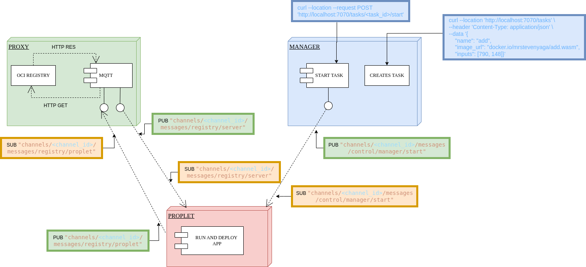

Proxy Service#
The Proxy Service acts as a bridge between MQTT and HTTP protocols in the Propeller system. It enables bidirectional communication between MQTT clients and HTTP endpoints, allowing for seamless integration of different protocols. The proxy service is responsible for fetching WebAssembly modules from an OCI-compliant registry, chunking them, and publishing them over MQTT for proplet instances to consume.
Overview#
The proxy service performs two main functions:
- Subscribes to MQTT topics and forwards messages to HTTP endpoints
- Streams data between MQTT and HTTP protocols
Usage#
To use the proxy service, you need to set the required environment variables and run the main.go file in the cmd/proxy directory.
PROXY_REGISTRY_URL="docker.io"
PROXY_AUTHENTICATE="TRUE"
PROXY_REGISTRY_USERNAME="docker_username"
PROXY_REGISTRY_PASSWORD="docker_password"
propeller-proxy
This will change the task definition. Since we are using hosted wasm modules, we need to specify the image URL. Hence the task definition will look like this:
{
"name": "add",
"inputs": [10, 20],
"image_url": "docker.io/mrstevenyaga/add.wasm"
}
How It Works#
The proxy service facilitates the download of WebAssembly (WASM) containers through a multi-step process:

-
Initial Request The proplet sends a download request via the MQTT topic:
m/:domain_id/c/:channel_id/messages/registry/propletThis request is received by the proxy service's MQTT subscriber -
OCI Registry Download The HTTP side of the proxy service receives this request It then sends a download request to the OCI registry to fetch the WASM container The container is downloaded as an OCI image
-
Chunked Data Transfer Once downloaded, the WASM image is split into chunks These chunks are sent back to the proplet via the MQTT topic:
m/:domain_id/c/:channel_id/messages/registry/serverThis chunked approach ensures efficient handling of large WASM files
Architecture Details#
Streaming System#
The proxy service implements a concurrent streaming architecture with two main components:
-
HTTP Stream Handles container fetching from the OCI registry. Splits containers into configurable chunk sizes Forwards chunks to the MQTT stream via an internal channel. Implements context-based cancellation for graceful shutdown.
-
MQTT Stream Receives chunks from the HTTP stream. Publishes chunks to MQTT topics. Tracks chunk delivery progress. Maintains a map of container chunks to ensure complete delivery.
Chunk Management#
- Uses a buffered channel system with a capacity of 10 chunks
- Tracks the progress of chunk delivery for each container
- Provides completion notifications when all chunks are successfully sent
- Automatically cleans up tracking data after successful delivery
Performance Features#
- Buffered Operations: Implements chunk buffering to optimize memory usage and transfer speed
- Concurrent Processing: Separate goroutines for HTTP and MQTT operations
- Progress Tracking: Real-time tracking of chunk delivery status
- Memory Management: Automatic cleanup of completed transfers
Configuration#
The proxy service is configured using environment variables.
Environment Variables#
| Environment Variable | Description |
|---|---|
PROXY_LOG_LEVEL |
Log level (e.g., debug, info, warn, error). |
PROXY_INSTANCE_ID |
A unique ID for this proxy instance. |
MQTT Configuration#
| Variable | Description | Default | Required |
|---|---|---|---|
PROXY_MQTT_ADDRESS |
URL of the MQTT broker | tcp://localhost:1883 |
Yes |
PROXY_MQTT_TIMEOUT |
The timeout for MQTT operations. | 30s |
No |
PROXY_MQTT_QOS |
The Quality of Service level for MQTT messages. | 2 |
No |
PROXY_DOMAIN_ID |
The domain ID for this proxy. | "" |
Yes |
PROXY_CLIENT_ID |
Unique identifier for the proplet | "" |
Yes |
PROXY_CHANNEL_ID |
Channel identifier for MQTT | "" |
Yes |
PROXY_CLIENT_KEY |
Password for MQTT authentication | "" |
Yes |
Registry Configuration#
| Variable | Description | Default | Required |
|---|---|---|---|
PROXY_REGISTRY_URL |
URL of the OCI registry | "" |
Yes |
PROXY_AUTHENTICATE |
Enable/disable registry authentication | false |
No |
PROXY_REGISTRY_USERNAME |
Username for registry authentication | "" |
Only if PROXY_AUTHENTICATE=true |
PROXY_REGISTRY_PASSWORD |
Password for registry authentication | "" |
Only if PROXY_AUTHENTICATE=true |
PROXY_REGISTRY_TOKEN |
Access token for registry authentication | "" |
Alternative to username/password |
PROXY_CHUNK_SIZE |
The size of the chunks to split the Wasm module into | 512000 |
No |
Example Configuration#
Export the required environment variables in your terminal:
# Registry Configuration
export PROXY_REGISTRY_URL="<registry_url>"
export PROXY_AUTHENTICATE="TRUE"
export PROXY_REGISTRY_USERNAME="<your_docker_username>"
export PROXY_REGISTRY_PASSWORD="<your_docker_password>"
# MQTT Configuration
export PROPLET_THING_KEY="<secret>"
export PROPLET_THING_ID="<proplet_id>"
export PROPLET_CHANNEL_ID="<channel_id>"
Authentication#
If your registry requires authentication, you can set the PROXY_AUTHENTICATE environment variable to true and provide either a token or a username and password.
Token Authentication#
export PROXY_AUTHENTICATE="true"
export PROXY_REGISTRY_TOKEN="your_token"
Username/Password Authentication#
export PROXY_AUTHENTICATE="true"
export PROXY_REGISTRY_USERNAME="your_username"
export PROXY_REGISTRY_PASSWORD="your_password"
Running the Service#
After exporting the environment variables, you can run the proxy service as shown:
make all && make install
propeller-proxy
This will install the binary in your GOBIN directory (ensure your GOBIN is configured correctly).
Deploying a Local OCI Registry#
Propeller supports pulling Wasm modules from any OCI-compliant registry. You can use a public registry like Docker Hub or set up your own private registry. You can deploy your own OCI registry using Docker and configure the proxy to pull WASM modules from it. This is useful for development and testing purposes.
1. Run a Local Registry#
First, run a local OCI registry using the official Docker image:
docker run -d -p 5000:5000 --name registry registry:3.0.0
This command will start a local registry in detached mode and map port 5000 on your host to port 5000 on the container.
2. Push a WASM Module to the Local Registry#
Next, you need to push a WASM module to your local registry. You can use a tool like oras or wasm-to-oci to do this. First, create WASM module. We can use the addition.wasm module from the propeller example after building the wasm module.
git clone https://github.com/absmach/propeller.git
cd propeller
make all
Now, push the addition.wasm file to your local registry using wasm-to-oci:
wasm-to-oci push ./build/addition.wasm localhost:5000/rodneydav/addition.wasm
wasm-to-oci push ./build/addition.wasm docker.io/rodneydav/addition.wasm
3. Configure the Proxy#
Finally, configure the proxy to use your local registry by setting the following environment variables:
export PROXY_REGISTRY_URL="localhost:5000"
export PROXY_AUTHENTICATE="false" # No authentication for local registry
Now, when you run the proxy, it will pull the addition.wasm module from your local registry when a request for localhost:5000/addition is made.
Service Flow#
-
Initialization Loads configuration from environment variables. Sets up logging with structured logging support. Creates a new proxy service instance. Initializes MQTT client and communication channels.
-
Connection Establishes connection to the MQTT broker. Subscribes to configured topics. Sets up HTTP streaming with the registry. Initializes chunk buffering system.
-
Operation Runs two concurrent streams:
-
StreamHTTP: Handles HTTP communication with the OCI registry.
- StreamMQTT: Handles MQTT communication for proplet requests and responses.
Uses error groups for graceful error handling and shutdown. Maintains chunk delivery tracking. Provides real-time progress logging.
- Error Handling Implements comprehensive error logging with context. Graceful shutdown with proper resource cleanup. Automatic disconnection from MQTT broker on service termination. Retry mechanisms for failed operations. Context-based cancellation support.
HTTP Registry Operations#
The HTTP configuration supports:
- Registry operations with optional authentication (username/password or token)
- Automatic retry mechanism for failed requests
- Chunked data handling with configurable chunk size (512KB default)
- Static credential caching for authenticated requests
- Progress tracking for multi-chunk transfers